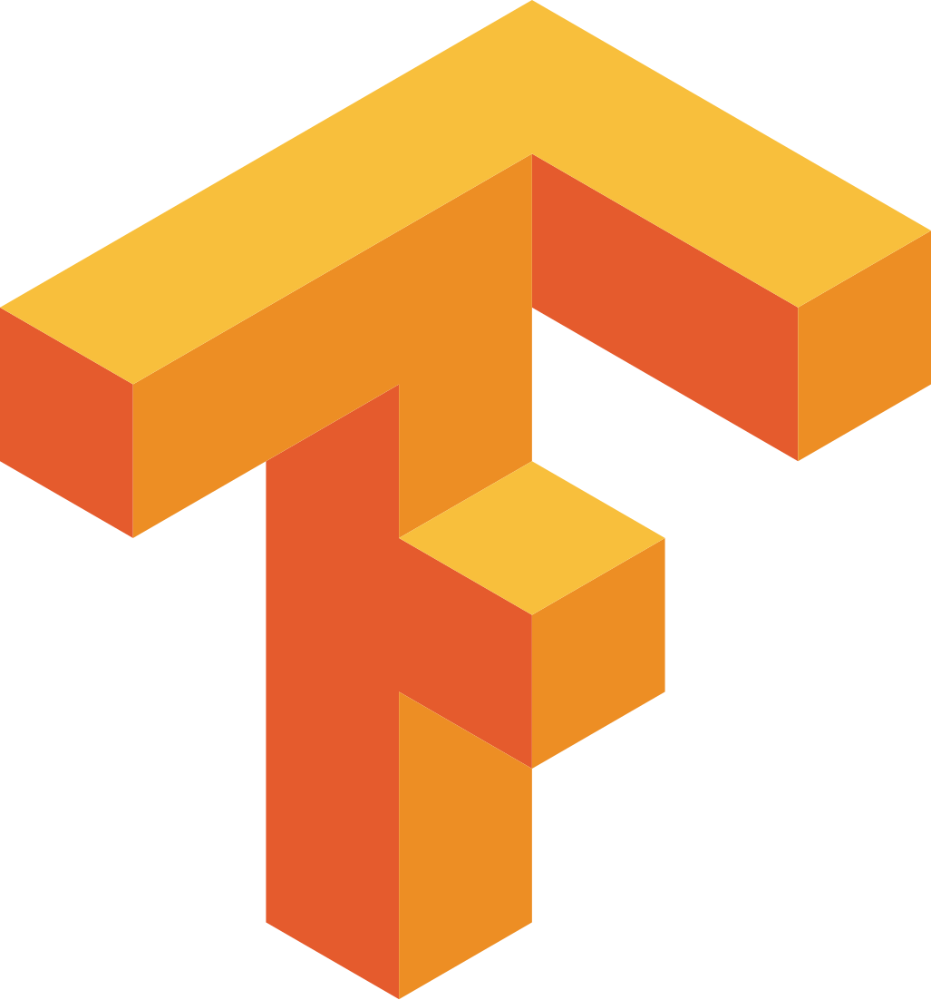
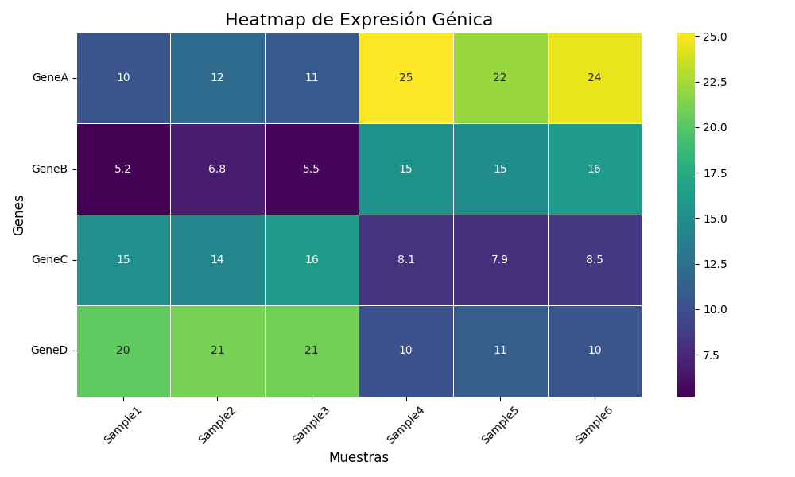

Seleccione un tema del panel izquierdo para ver su contenido.
// INICIANDO_PROTOCOLO_INTRODUCCIÓN
Médico y nutricionista transitando hacia la vanguardia digital. Actualmente potenciando mis capacidades con tres maestrías concurrentes: Bioinformática, Ciencia de Datos y Robótica/Visión Artificial. Mi enfoque: la simbiosis entre conocimiento clínico y la potencia computacional de la IA para diseñar soluciones disruptivas en salud y biología. Este log documenta mi evolución y creaciones.
// ARSENAL_DE_COMPUTACIÓN_BIO-AI
Integrando y dominando el stack tecnológico para la bioinformática y la inteligencia artificial.



TensorFlow 


// EXPERTISE EN GITHUB Y PROGRAMACIÓN
Como ingeniero en bioinformática y dev apasionado, uso GitHub diariamente para versionar código, colaborar y deployar proyectos. Aquí mis repos clave, con +X commits y contribuciones open-source. Demostrando skills en Python, JS, Git workflows y más. ¡Listo para contribuir a tu equipo!
Cargando repositorios desde GitHub API...
// MÓDULOS_DE_PROYECTO_ACTIVOS
Actualmente desarrollando [Describe brevemente un proyecto]. El objetivo principal es aplicar algoritmos de aprendizaje profundo para [Objetivo específico] y optimizar [Proceso robótico] mediante visión computacional avanzada. Próximas actualizaciones en el log.
ACCEDER AL LOG// Análisis con Python: Expresión Génica
Como demostración de mis habilidades en Python para el análisis de datos bioinformáticos, he creado un script (`analisis_exploratorio.py`) que procesa un conjunto de datos de expresión génica y genera un heatmap para visualizar los patrones. Puedes encontrar el script y los datos en la carpeta proyectos. Para regenerar el gráfico, instala las dependencias con `pip install -r proyectos/requirements.txt` y ejecuta `python proyectos/analisis_exploratorio.py`.

// PORTAFOLIO_ACADÉMICO
Un desglose de las competencias y conocimientos adquiridos durante mis estudios de máster, enfocado en la aplicación práctica de tecnologías bioinformáticas.
Máster en Bioinformática
Universidad Internacional de La Rioja (UNIR)Algoritmos e Inteligencia Artificial
Ver Temario >Programación Científica y Linux
Ver Temario >Estadística y R
Ver Temario >Secuenciación y Ómicas (NGS)
Ver Temario >Genética Clínica y de Poblaciones
Ver Temario >Aspectos Éticos y Legales
Ver Temario >Trabajo Fin de Máster (TFE)
Ver Fases >Máster en Ciencia de Datos
Techtitute (En Progreso)Competencias en analítica, organización empresarial y tecnologías de la información.
Módulo 1. Analítica del dato en la organización empresarial
Ver Temario >Máster en Robótica y Visión Artificial
Techtitute (En Progreso)Competencias en diseño, modelado matemático, cinemática y simulación de robots.